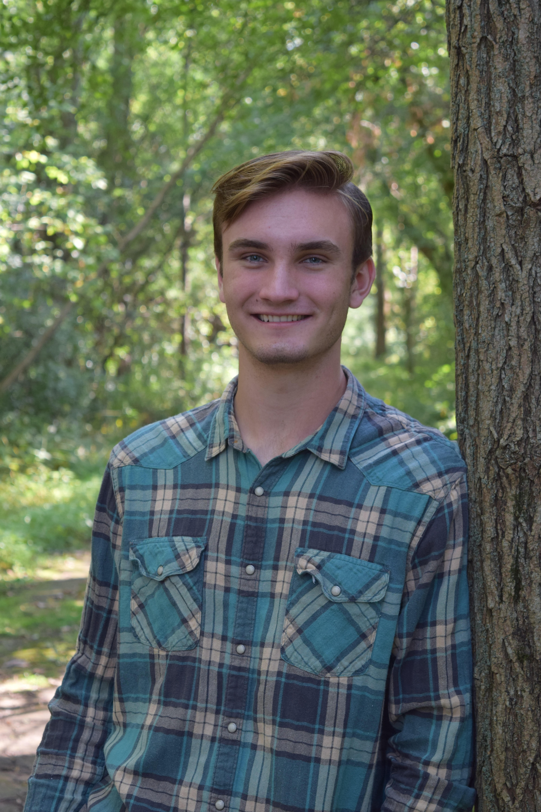

About Me
Hey! I'm Joshua Brunscheen a CS and ITWS dual major at RPI.

I was a Salutatorian of the Class of 2022 at Kaneland High School where I spent my time being a part of the National Honors Society, Scholastic Bowl team, World Languages Club, and tennis team.
After graduating, I went to Rensselaer Polytechnic Institute to work towards my BA in Computer Science and ITWS. As a part of my time at RPI, I joined RPI SEC and Coding and Community.
Coding and Community gave me the opportunity to share my skills with high school students with a focus on diminishing the racial and gender demographic gaps in STEM.
For fun, I like teaching myself how to play the piano, pet sitting, and thrifting.